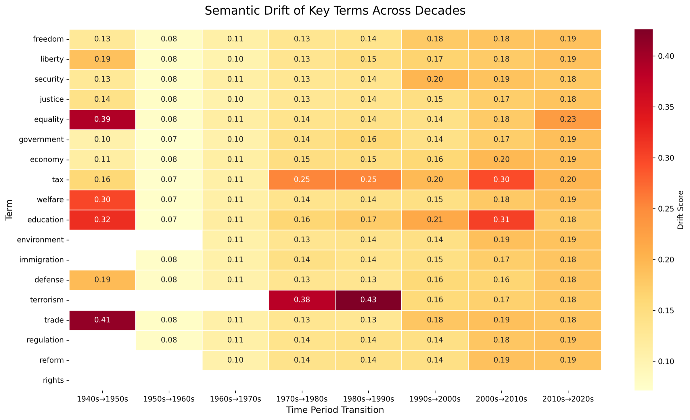
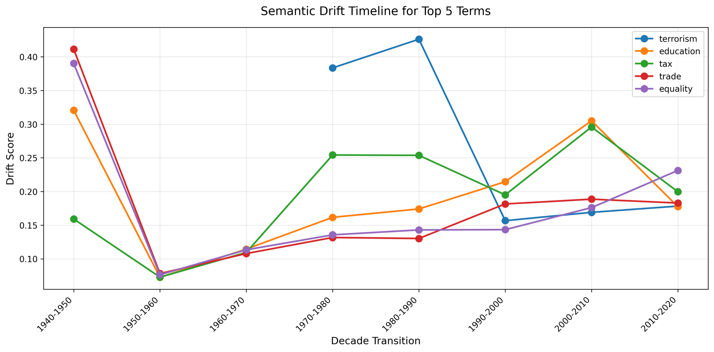
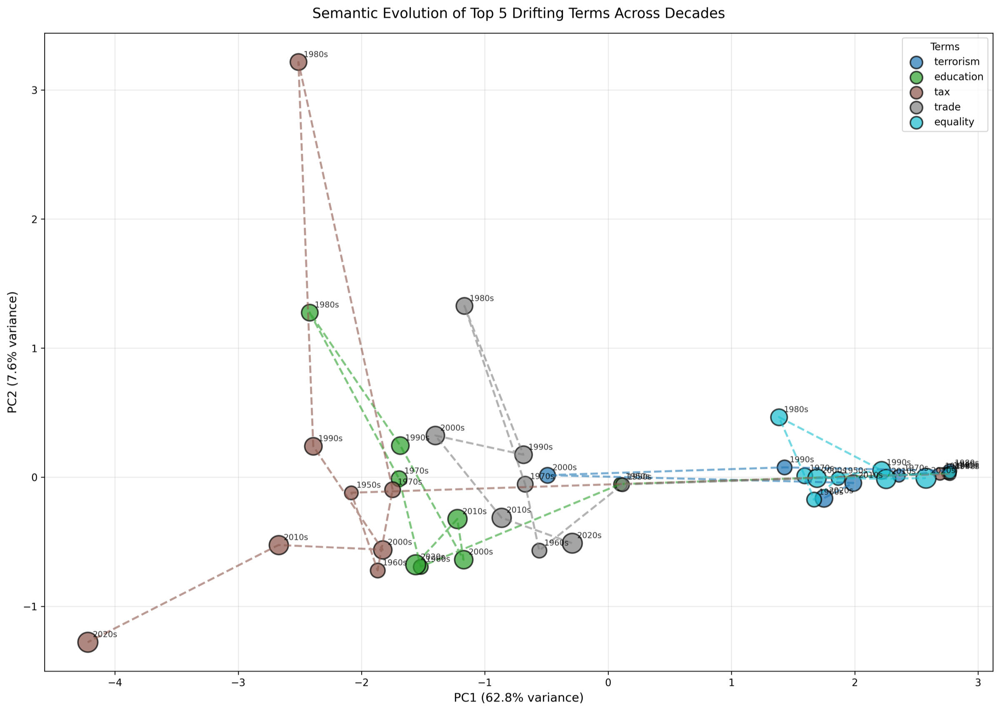
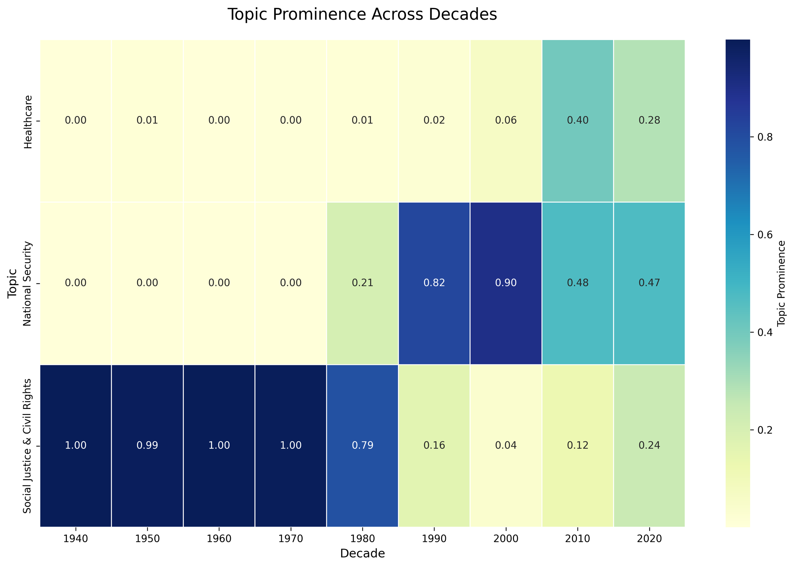
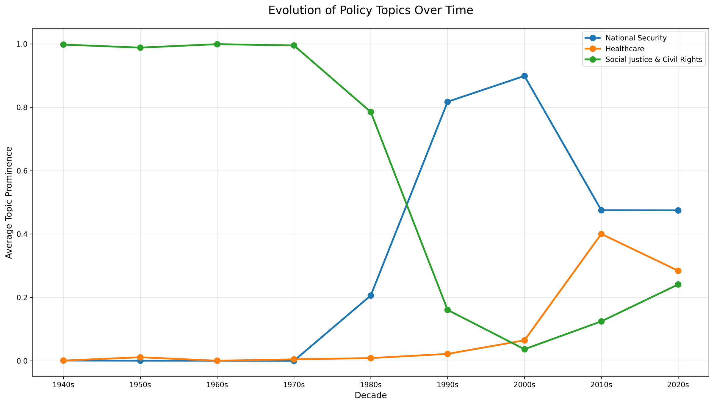
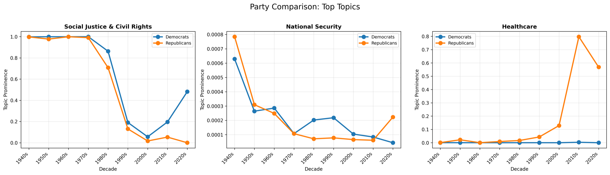

Research paper · 2025
Tracing Ideological Drift in Political Manifestos through Temporal Text Mining
1Introduction
Political discourse shapes democratic societies, yet the language of politics is not static, it evolves in response to shifts in social, economic, and cultural landscapes. Terms like freedom, security, and justice carry vastly different connotations now than they did half a century ago. A staunch example can be seen in the word ‘liberalism’. Once primarily associated with an opposition to monarchy in the early 20th century, has now become multidimensional and carries a fundamentally different meaning depending on the context used: ‘economic liberalism’ advocates for free markets with limited government intervention while ‘social liberalism’ advocates for greater government intervention to address inequality by increasing public welfare. Understanding how political language evolves over time is crucial for political scientists, historians, and policymakers whose interpretations of these words shape the rules of today for the governance of tomorrow.
Traditional approaches to analyzing political ideology rely heavily on manual content analysis or static classification frameworks that categorize parties as simply “left” or “right”. While these methods provide snapshots of political positioning, they fail to capture the dynamic nature of ideological evolution. They are also very slow and subjective and thus are ill-equipped to process the vast collection of political documents spanning decades. This paper addresses this gap by developing an automated temporal text mining framework that automatically detects and visualizes ideological drifts in political manifestos across multiple decades. The framework combines word embedding analysis for semantic drift detection and topic modeling for thematic evolution, providing both quantitative measures of linguistic change and qualitative insights into the transformation of political discourse.
I demonstrate this applicability by analyzing over 50 years of manifestos from the Manifesto Corpus, a database from the Manifesto Project that comprises over 1,000 manifestos from more than 50 different countries in almost 40 languages since 1945 (Lehmann et al., 2025). Unlike studies using the entire Manifesto Corpus, this project focuses solely on the U.S.; a country which has shown consistent two-party dynamics, thus allowing for cleaner temporal analysis. The data that I use for my investigation consists only of 40 manifestos which span from 1948 to 2024, evenly distributed between the Democratic and the Republican Party.
This investigation has broad applications across multiple domains. Political scientists can use these techniques to test hypotheses about party realignment and ideological polarization. Historians can identify inflection points where political language underwent significant transformation, correlating these with major historical events. And policymakers can use these visualizations to track the evolution of messaging and stick behind the ones that resonates the best with their constituents. The temporal text mining framework can also be used beyond political science, applicable to the analysis of semantic drift in legal documents, corporate communications, scientific literature, and any domain where language evolution matters. In the subsequent sections, I detail the methodology I employed and the algorithms I implemented in my investigation. I then present my quantitative and qualitative findings from the visualizations I built and demonstrate how political language has changed in the United States since 1948. Finally, I conclude this paper by evaluating the effectiveness of my models and the future directions my research can follow to advance the field of political analysis.
2Methodology and Implementation
All code was written using Python 3 and organized into modular scripts with clear function documentation and inline comments. A master orchestration script, run_analysis.py, was built to execute the complete pipeline sequentially. Each stage includes progress indicators and completion messages to facilitate debugging and monitoring. All random processes use fixed random seeds to ensure reproducibility. The estimated runtime for the complete pipeline is between 4 to 5 minutes, with Optical Character Recognition (OCR) representing the most intensive component. A Makefile was implemented to provide convenient automation for running the full pipeline and cleaning intermediate files.
2.1Data Extraction and Combination
From the 40 manifestos in my data set, 6 exist as scanned PDFs. They are the oldest of the manifestos from the years 1948, 1952, and 1956. This required OCR implementation to process them into scannable text. To achieve this, I combined the pytesseract and pdf2image.convert_from_path() python libraries. Two IF functions were written to account for each party, and the data was extracted and saved as a .pkl for the model for faster processing. The other 34 manifestos were available as structured CSV files and therefore already had scannable text. I implemented another script which extracted and standardized all the data into a unified dataset structure containing party affiliation, year, decade classification, source type, and full text content. This resulted in a final dataset containing a total of 888,566 words.
2.2Text Preprocessing
These raw political texts needed extensive preprocessing to remove noise while preserving ideologically meaningful content. This was performed in five sequential stages: (1) text normalization, (2) tokenization, (3) stopword removal, (4) lemmatization, and (5) short token filtering. I used the NLTK python library to perform these efficiently. For the first stage, all text was converted to lowercase and non-alphanumeric characters were removed, as well as URLS and email addresses, preserving only spaces and standard letters to ensure consistent tokenization, which followed. This next stage required the use of the nltk.tokenize.word_tokenize library to split documents into individual word tokens using whitespace delimiters. To these tokens I applied a comprehensive stopword filtering strategy by combining three lists: NLTK’s standard English stopwords using the nltk.corpus.stopwords library, political-specific stopwords including presidential and candidate names, and generic political terms that could dominate topic models, such as party, american, and more. The fourth stage, lemmatization, required the use of the nltk.stem.WordNetLemmatizer library to reduce inflectional variants to their base form (i.e., economies into economy). Finally, I removed tokens that were shorter than three characters, ensuring that residual noises and abbreviations with little semantic value were removed. This preprocessing pipeline reduced the dataset from 888,566 words to 514,358 words. My dataset was now ready to be analyzed and used to train my models.
2.3Word Embedding Analysis for Semantic Drift Detection
Researchers have trained embeddings on texts from different decades and aligned them to detect meaning drift. A group of researchers from Stanford University pioneered the use of diachronic word embeddings to reveal statistical laws of semantic change, demonstrating that word meanings evolve in predictable patterns related to frequency and polysemy (Hamilton et al., 2016). Despite this advance, it focuses on general language collections rather than political manifestos specifically. Political texts present a unique challenge in that they are highly curated, densely packed with ideological signals, and may use coded language that requires domain-specific interpretation which I had to consider.
For my word embedding analysis, I used separate Word2Vec embedding models for each decade that computed drift scores for key ideological terms. Word2Vec is a word embedding technique that allows words to be represented as vectors in a continuous space, allowing for text classification to be applied (GeeksforGeeks, 2018). These models were implemented using the gensim.models python library and included the following parameters:
VECTOR_SIZE=100 # Balances interpretability with computational efficiency
WINDOW=5 # Removes any surrounding context words
MIN_COUNT=2 # Filters out rare words
EPOCHS=10 # Enough to prevent overfittingEach decade’s model was trained exclusively on documents from that period, creating independent semantic spaces representing how political language was used during that era. To these, I computed drift scores by applying cosine similarity between the same term’s embedding models in adjacent time periods to measure how meanings shifted between consecutive decades (Hamilton et al., 2016). Terms with higher drift scores indicate greater semantic change. I aggregated these drift scores across all consecutive decade pairs to identify terms with the highest overall semantic change.
2.4Topic Modeling for Thematic Evolution
Topic modeling captures how topics evolve over time by modeling the transition of topic distributions across sequential time periods (Blei & Lafferty, 2006). It is a statistical language model used for uncovering hidden structures in a collection of texts (Kapadia, 2019). While word embeddings capture semantic drift at the term level, topic models allow me to reveal broader thematic patterns in political discourse. I employed topic modeling using Latent Dirichlet Allocation (LDA) to discover latent topics and track their evolution across decades. To achieve this, I first created a document-term matrix using the CountVectorizer vectorization from the sklearn.feature_extraction.text python library with strategic filtering parameters and the combined stopword list from preprocessing. This sparse matrix was then used to train my LDA model to extract 4 topics with the following parameters:
n_components=N_TOPICS, # Equal to 4
max_iter=50, # Sufficient iterations for convergence
learning_method='online', # Faster for small datasets
random_state=42, # Ensures Reproducibility
n_jobs=-1, # Uses all CPU coresEach discovered topic was labeled by examining its top 10 most probable words and applying rule-based heuristics to classify topics into policy domains, such as National Security, Education, and more. These extracted topics were also separated by party to identify partisan differences.
3Experimental results with Historical Interpretation analysis
Using the matplotlib and seaborn python libraries, I produced the following 6 key visualizations from my two models:
3.1Word Embedding Model #1: Semantic Drift Heatmap

This heatmap displays the semantic drift scores for eighteen key ideological terms across consecutive decade transitions. Each row represents a political term (freedom, security, tax, etc.), and each column represents a decade transition. The drift scores range in a 0 to 1 scale. In this figure, we can see that the term trade underwent the most dramatic semantic shift (0.43) during the 1940s-1950s, coinciding with the post-WWII era which reflected a massive shift from wartime economics to international trade frameworks. The term terrorism experienced consecutive substantial shifts during the 1970s and 1980s (0.37 and 0.41, respectively). This is noteworthy as it illuminates a subtle yet significant part of U.S. foreign policy discourse. Upon reading the manifestos from that era, I came to understand that during the 1970s, amid the intensification of the Cold War, the label terrorism was used to describe communist threats, including those associated with Castro’s Cuba. By the 1980s, however, U.S. attention had pivoted towards an entirely different geopolitical context: the Middle East. Countries such as Syria and Iran, along with organizations like the Palestinian Liberation Organization (PLO), increasingly came to be characterized as terrorist actors. Although Islamophobia in the U.S. is often framed as a post-9/11 phenomenon, this reframing suggests that it may have emerged considerably earlier. All other terms except for some were moderately low in their semantic change.
3.2Word Embedding Model #2: Semantic Drift Timeline

This line graph tracks the top five most drifting terms across all decade transitions over time. The X-axis represents the decade transitions and the Y-axis the semantic drift scores. It reveals that the trajectory of semantic change is not constant. Terms like education, trade, and equality follow a similar trajectory throughout. The term tax, however, suffers more significant spikes, most notably in the 1970s and the 2010s. It reveals the drastically different approaches to tax policy between the two consecutive administrations in their eras (Carter-Reagan, and Bush-Obama, respectively). Interestingly enough, most terms converge to lower drifts in recent years, suggesting that political language has become more homogenous and standardized — they lack diversity in ways of speaking about them. This is true except for one, equality, which is less stable now than it was in the 1950s, revealing the disparity that persists when discussing what it means to be equal in America.
3.3Word Embedding Model #3: Term Evolution Map

Present above is a 2D Principal Component Analysis (PCA) projection showing how terms migrate through a semantic space over time. PC1, on the X-axis, refers to a direction that explains the most variance in the data while PC2, on the Y-axis, is the direction that explains the second most variance and is uncorrelated with PC1 (Slapin & Proksch, 2008). PC1 has a variance of 62.3% and PC2 a variance of 8.6%, meaning that together they explain 70.9% of the total variance in the dataset. This is pretty significant and enough to provide a useful summary of my data. Each color represents a different term, and different points represent a term in a specific decade so that the distance between these points describe the amount of semantic change between them. The cluster in the right side, shared by the terms equality and terrorism, suggests they share a semantic space in contemporary discourse, meaning they may be used in similar contexts (i.e., security, global issues, etc.,). A critical observation is that there are three terms which show the 1980s as extreme outliers (tax, education, and trade), validating that this decade represented great semantic disruption and not just topic shifts; the Reagan-era language fundamentally reframed these concepts. As noted before with topics becoming homogeneous, this is supported by the fact that all terms, except for tax, show clustering in the most recent decades.
3.4Topic Model #1: Topic Heatmap

The heatmap above displays the prominence of three discovered policy topics across decades highlighting thematic shifts. Each row is a discovered topic, and each column is a decade. The LDA model achieved a perplexity score of 1043.01, indicating reasonable fit for this corpus size. However, the LDA model was initialized with k-4 topics and as we can see in the heatmap, convergence analysis revealed that only 3 topics exhibited sufficient coherence. This may suggest that US political manifestos naturally cluster around three primary thematic domains rather than four, reflecting the genuine structure of political discourse.
3.5Topic Model #2: Topic Timeline

Above we can see a multi-line graph showing how the top three topics evolve in prominence over time. The Y-axis represents the average topic prominence, and the X-axis the decades. These results help tell a compelling three-act narrative. There is the Post-War Era where Social Justice & Civil Rights dominated the political conversation, followed by a transition phase where National Security emerged, around the same time Reagan took office and modern polarization was introduced. The final act has Healthcare rise dramatically from the 1990s onwards. By now, all three topics share almost equally a prominence in current discourse, highlighting how political discourse has shifted from single topics taking major focal points to now a heterogeneity of topics being discussed at a time.
3.6Topic Model #3: Party Topic Comparison

Above we see three different subplots comparing the Democratic Party (blue) against the Republican party (orange) on the top three most prominent topics in the last 76 years: Social Justice & Civil Rights, National Security, and Healthcare. Each graph has the average topic prominence on its Y-axis and the decades as its X-axis. The different graphs show how each party emphasized the three topics in different eras. For instance, the Democrats show a recent dominance when it comes to discussing Social Justice & Civil Rights compared to the other two. On this same topic, Republicans were having the same topic dominance as the Democrats until the 1990s which saw this topic prominence plummet, possibly due to it being replaced by Healthcare which now dominates their discourse at 0.6 in the 2020s. Both parties show a similar topic prominence trajectory in discussing National Security.
4Conclusion
This project demonstrated that temporal text mining techniques can detect and quantify ideological drift in political manifestos. Word2Vec embeddings captured granular semantic shifts at the term level, allowing us to track when terms like terrorism and trade changed meaning in different decades. LDA topic modeling uncovered inflection points that revealed broader thematic evolution patterns. By combining techniques on 40 U.S. political manifestos, this research uncovered major findings that advance our understanding of how political language evolves. It proves that utilizing both techniques yields richer insights rather than any single method alone. However, while this study provides valuable insights, several limitations should be acknowledged. Firstly, the scope of my analysis focused exclusively on the U.S. Democratic and Republican party platforms, limiting generalizability to other political systems, document types, countries, and more. The sample size was also limiting with just 40 manifestos spanning 76 years. A larger dataset with more documents per time period would strengthen statistical confidence. Moreover, the fact that I was analyzing per decade could also be a limiting factor in that the analysis fails to capture inflection points between decade boundaries, making it difficult to isolate major historical events. When it comes to topic modeling analysis, my LDA assumes that topics remain stable across time periods, which does not consider the possibility for changes in lexical meanings of different topics, proving to be a limitation as well. Future research directions could focus on extending the methodology by incorporating greater data analysis that includes different nations and document data types. To address changes in lexicality of topics, researchers could employ dynamic topic modeling specifically designed for diachronic analysis to allow topic distributions to evolve rather than assume static topics.
References
- Blei, D. M., & Lafferty, J. D. (2006). Dynamic topic models. In Proceedings of the 23rd International Conference on Machine Learning (pp. 113–120). Association for Computing Machinery. https://doi.org/10.1145/1143844.1143859
- GeeksforGeeks. (2018, May 18). Python | Word embedding using Word2Vec. https://www.geeksforgeeks.org/python/python-word-embedding-using-word2vec/
- Hamilton, W. L., Leskovec, J., & Jurafsky, D. (2016). Diachronic word embeddings reveal statistical laws of semantic change. In Proceedings of the 54th Annual Meeting of the Association for Computational Linguistics (Volume 1: Long Papers) (pp. 1489–1501). Association for Computational Linguistics. https://doi.org/10.18653/v1/P16-1141
- Kapadia, S. (2019, April 14). End-to-end topic modeling in Python: Latent Dirichlet allocation (LDA). Towards Data Science. https://towardsdatascience.com/end-to-end-topic-modeling-in-python-latent-dirichlet-allocation-lda-35ce4ed6b3e0/
- Lehmann, P., Franzmann, S., Al-Gaddooa, D., Burst, T., Ivanusch, C., Lewandowski, J., Regel, S., Riethmüller, F., & Zehnter, L. (2025). Manifesto corpus (Version 2025-1) [Data set]. WZB Berlin Social Science Center; Institute for Democracy Research (IfDem).
- Slapin, J. B., & Proksch, S.-O. (2008). A scaling model for estimating time-series party positions from texts. American Journal of Political Science, 52(3), 705–722. https://doi.org/10.1111/j.1540-5907.2008.00338.x